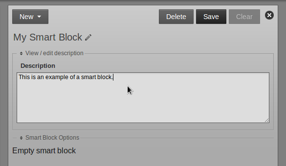
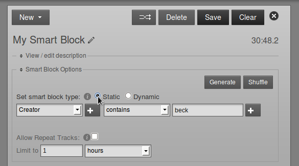
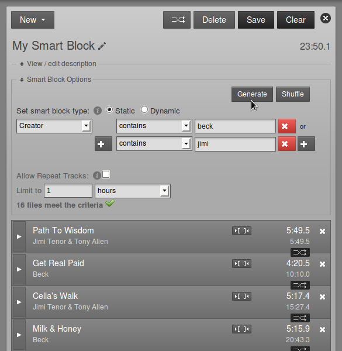
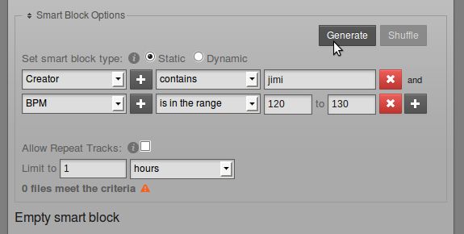
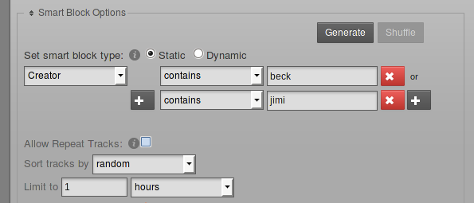
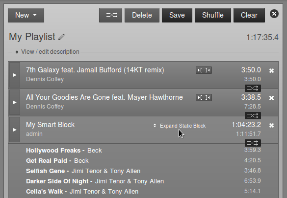

Creating a smart block
Smart blocks are automatically filled with media files from the LibreTime library, according to the criteria that you specify. This feature is intended to save staff time, compared to selecting items for a playlist manually, and can be used to schedule shows that operate in a consistent format.
To create a smart block, click the Smartblocks button on the left sidebar, and select New from the toolbar. Like a playlist, smart blocks can have a title and description, which you can edit. This helps you find relevant smart blocks in searches.

Click the link Smart Block Options to display the criteria and modifiers for the smart block. The criteria can be any one of LibreTime's metadata categories, such as Title, Creator or Genre. The modifier depends on whether the metadata in question contains letters or numbers. For example, Title has modifiers including contains and starts with, whereas the modifiers for BPM include is greater than and is in the range.
You can also set the smart block type. A Static smart block will save the criteria and generate the block content immediately. This enables you to edit the contents of the block in the Library page before adding it to a show. A Dynamic smart block will only save the criteria, and the specific content will be generated at the time the block is added to a show. After that, the content of the show can be changed or re-ordered in the Now Playing page.

Click the plus button on the left to add OR criteria, such as Creator containing beck OR jimi. (The criteria are not case sensitive). For a static smart block, click the Generate button to see the results. Dynamic smart blocks do not display the Generate or Shuffle buttons.

If you don't like the ordering which is generated, click the Shuffle button, or drag and drop the smart block contents into the order that you prefer. You can also remove items or add new items manually from the Library. Changes to static smart block contents are saved automatically when you add items, remove or re-order them, or click the Generate button. Click the Save button in the upper right corner to save any changes to smart block criteria.
To add an AND criteria, such as Creator containing jimi AND BPM in the range 120 to 130, click the plus button on the right. If you see the message 0 files meet the criteria in this case, it might mean that the files in the Library have not been tagged with BPM metadata. See the chapter Preparing media for ingest for tips on tagging content.

By default, a smart block will not contain repeated items, which will limit the duration of the block if you do not have sufficient items meeting the specified criteria in your Library. To override the default behaviour, check the Allow Repeat Tracks box. The Sort tracks by menu offers the options of random, newest or oldest items first.

In addition Smart Blocks by default will never overflow the Time Limit. For instance if you set a time limit of 1 hour. It will add tracks to the schedule until it can't add any more tracks without exceeding the hour. This is to prevent tracks from being cut-off because they exceed the time limit of a show.
If you want a smartblock to schedule tracks until it is longer than the Time Limit you can check "Allow last track to exceed time limit". This will make LibreTime add tracks that meet the criteria until it equals or is longer than the time limit. This is helpful for avoiding dead air on shows that are being autoscheduled.
If you have a large number of files which meet the criteria that you specify, you may wish to limit the duration of the smart block using the Limit to field, so that it fits within the show you have in mind. Select hours, minutes or items from the drop-down menu, and click the Generate button again, if it is a static smart block. Then click the Save button.
Smart blocks can be added to shows in the same way as a manually created playlist is added. Smart blocks can also be added to one or more playlists. In the case of a playlist containing a static smart block, click Expand Static Block to view the contents. For a dynamic smart block, you can review the criteria and duration limit by clicking Expand Dynamic Block.

Once created, smart blocks can be found under the Smartblocks tab and refined at any time. They can be re-opened by right-clicking on the smart block and selecting Edit from the pop-up menu.